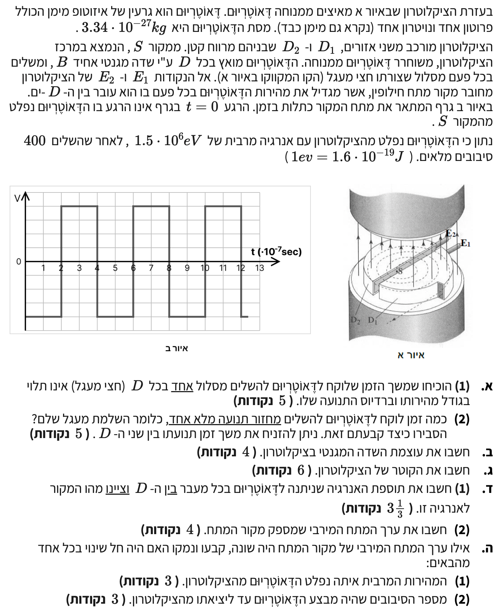

פתרון שאלה 5 - ציקלוטרון
מתכונת 1 בפיזיקה - חשמל ומגנטיות
הכנת פתרון מוסבר לתלמידים, שלב אחר שלב.
עודכן:
--- --:--:--

[תמונת השאלה המקורית]
לא נמצאה תמונה בשם question-image.png באותה תיקייה.
הקדמה: הכנת הנתונים
לפני שנתחיל לפתור, נזכור כלל ברזל בפיזיקה: אנו עובדים תמיד במערכת יחידות MKS (מטר, קילוגרם, שנייה, קולון). נציג את הנתונים החדשים בכל סעיף, אך כבר עכשיו נרשום את נתוני החלקיק שלנו.
- החלקיק הוא דאוטריום (מורכב מפרוטון אחד ונויטרון אחד).
- מטען החלקיק חיובי ושווה למטען פרוטון: \( q = +e = 1.6 \cdot 10^{-19} \text{ C} \)
- מסת החלקיק נתונה: \( m = 3.34 \cdot 10^{-27} \text{ kg} \)
מה נתון: חלקיק טעון חיובי נכנס לשדה מגנטי אחיד המאונך לכיוון תנועתו בתוך חצי קופסה (D).
מה מחפשים: להוכיח שהזמן שלוקח לחלקיק להשלים חצי מעגל (\( t \)) אינו תלוי בגודל מהירותו (\( v \)) וברדיוס מסלולו (\( r \)).
נוסחאות מהדף:
\( \Sigma\vec{F}=m\vec{a} \)
\( a_R=\frac{v^2}{r} \)
\( F=qvB\sin\alpha \)
\( v=\frac{2\pi r}{T} \)
תרשים כוחות חופשי (FBD) ומסלול החלקיק
החלקיק נע בחצי מעגל. הכוח המגנטי מכוון תמיד למרכז המעגל ומהווה כוח צנטריפטלי.
פתרון צעד-אחר-צעד:
החלקיק נע בתוך ה-D. כיוון המהירות מאונך לכיוון השדה המגנטי, לכן הזווית \(\alpha = 90^\circ\) ו- \(\sin(90^\circ) = 1\).
נרשום את החוק השני של ניוטון עבור ציר הרדיוס (פנימה מוגדר כחיובי):
\[ \Sigma F_R = m \cdot a_R \]
\[ qvB = m \frac{v^2}{r} \]
נצמצם ב-\(v\) (מותר כי \(v \neq 0\)) ונבודד את הרדיוס \(r\):
\[ r = \frac{mv}{qB} \]
זמן של הקפה מלאה (\(T\)) קשור למהירות דרך הנוסחה מהדף \(v = \frac{2\pi r}{T}\). נבודד את \(T\) ונקבל \(T = \frac{2\pi r}{v}\).
נציב את הביטוי שמצאנו עבור הרדיוס \(r\) אל תוך הנוסחה של \(T\):
\[ T = \frac{2\pi \left(\frac{mv}{qB}\right)}{v} = \frac{2\pi m}{qB} \]
הזמן המבוקש הוא חצי מהקפה (זמן ל"חצי מעגל"), שנסמנו \(t\):
\[ t = \frac{T}{2} = \frac{\pi m}{qB} \]
מ.ש.ל: רואים מהמשוואה הסופית שהזמן \(t\) תלוי אך ורק במספר \(\pi\), במסת החלקיק \(m\), במטען \(q\), ובעוצמת השדה המגנטי \(B\). ביטוי זה אינו כולל את המהירות \(v\) או את הרדיוס \(r\).
טיפ מורה:
זהו "הקסם" של הציקלוטרון! ככל שהחלקיק משיג מהירות גדולה יותר (גודל המהירות גדל), הוא מבצע מסלול ברדיוס גדול יותר. שני האפקטים הללו מבטלים זה את זה בדיוק! ולכן החלקיק ישהה בתוך ה-D תמיד את אותו פרק הזמן, לא משנה מה גודל מהירותו. עובדה זו מאפשרת לנו להשתמש במקור מתח חילופין בעל תדירות קבועה.
מה נתון: גרף המתח כפונקציה של הזמן (איור ב'). ציר הזמן הוא ביחידות של \(10^{-7} \text{ sec}\).
מה מחפשים: את זמן המחזור השלם (\(T\)) של מקור המתח, והסבר על הזנחת מרווח ה-D.
פתרון והסבר:
כדי שהחלקיק יואץ באופן רציף, כיוון השדה החשמלי (סימן המתח) חייב להתהפך בכל פעם שהחלקיק עובר במרווח. זמן מחזור שלם משמעותו הזמן שלוקח לחלקיק להשלים סיבוב מלא (360 מעלות) – כלומר שהייה בשני חצאי המעגלים (גם ב-D הראשון וגם ב-D השני) וחזרה לאותו כיוון תנועה.
מכיוון שבכל סיבוב שלם החלקיק חוצה את המרווח פעמיים (מ-D1 ל-D2 ובחזרה), המתח חייב להשתנות פעמיים במהלך מחזור אחד שלם. המשמעות היא שהחלקיק מואץ פעמיים בכל מחזור (פעם אחת בכל כיוון של השדה החשמלי). הבנה זו בונה לנו את הבסיס להמשך כשנרצה לקשר בין מספר הסיבובים הכולל למספר ההאצות שהחלקיק חווה.
מתוך הגרף אנו רואים שמחזור שלם של המתח (מנקודת ההתחלה החיובית ב-\(t=0\) ועד תחילת המחזור הבא ב-\(t=4\)) אורך 4 יחידות. לכן, זמן המחזור השלם הוא:
\[ T = 4 \cdot 10^{-7} \text{ s} \]
זמן המחזור השלם הוא \( 4 \cdot 10^{-7} \text{ s} \).
מדוע ניתן להזניח את זמן השהייה במרווח?
- המרווח הפיזי בין שני ה-D-ים הוא קטן מאוד ביחס לרדיוס המסלול הכולל. מכיוון שהמרחק קטן והמהירות עצומה, זמן המעבר שם שואף לאפס ביחס לזמן השהייה בתוך ה-D.
- מבחינה אידיאלית בגרף הנתון, אנו רואים שינוי מתח בקווים מאונכים לחלוטין (זמן שינוי אפס), מה שמרמז שהמעבר במודל התיאורטי שלנו נחשב רגעי.
מה נתון: זמן מחזור שלם: \(T = 4 \cdot 10^{-7} \text{ s}\) (ולכן זמן לשהייה בחצי מעגל אחד הוא \(t = \frac{T}{2} = 2 \cdot 10^{-7} \text{ s}\)), מסה \(m = 3.34 \cdot 10^{-27} \text{ kg}\), מטען \(q = 1.6 \cdot 10^{-19} \text{ C}\).
מה מחפשים: את גודל השדה המגנטי האחיד \(B\).
חישוב:
נשתמש בנוסחה שפיתחנו בסעיף א(1) עבור זמן השהייה:
\[ t = \frac{\pi m}{qB} \]
נבודד את המשתנה שאנו מחפשים, עוצמת השדה המגנטי \(B\):
\[ B = \frac{\pi m}{q \cdot t} \]
נציב את הנתונים המספריים:
\[ B = \frac{\pi \cdot 3.34 \cdot 10^{-27}}{1.6 \cdot 10^{-19} \cdot 2 \cdot 10^{-7}} \]
\[ B = \frac{3.14159 \cdot 3.34 \cdot 10^{-27}}{3.2 \cdot 10^{-26}} \]
עוצמת השדה המגנטי היא \( B \approx 0.3279 \text{ T} \).
מה נתון: אנרגיה קינטית מרבית: \(E_{k,max} = 1.5 \cdot 10^6 \text{ eV}\). נתון ההמרה \(1\text{eV} = 1.6 \cdot 10^{-19}\text{J}\).
מה מחפשים: את קוטר הציקלוטרון, \(d\) (\(d = 2R_{max}\)).
נוסחאות מהדף:
\( E_k = \frac{1}{2}mv^2 \)
חישוב צעד-אחר-צעד:
שלב 1: המרת יחידות
כדי להשתמש בנוסחאות מכניקה, האנרגיה חייבת להיות בג'אולים (J). נבצע המרה:
\[ E_{k,max} = 1.5 \cdot 10^6 \cdot 1.6 \cdot 10^{-19} = 2.4 \cdot 10^{-13} \text{ J} \]
שלב 2: מציאת המהירות המרבית
נחלץ את המהירות מהנוסחה לאנרגיה קינטית:
\[ E_{k,max} = \frac{1}{2}mv_{max}^2 \quad \Rightarrow \quad v_{max} = \sqrt{\frac{2E_{k,max}}{m}} \]
\[ v_{max} = \sqrt{\frac{2 \cdot 2.4 \cdot 10^{-13}}{3.34 \cdot 10^{-27}}} = \sqrt{1.437 \cdot 10^{14}} \approx 1.198 \cdot 10^7 \text{ m/s} \]
שלב 3: מציאת הרדיוס המרבי והקוטר
הרדיוס המרבי שאליו מגיע החלקיק שווה לרדיוס הציקלוטרון. נשתמש בקשר שפיתחנו: \(r = \frac{mv}{qB}\).
\[ R_{max} = \frac{m \cdot v_{max}}{q \cdot B} \]
\[ R_{max} = \frac{3.34 \cdot 10^{-27} \cdot 1.198 \cdot 10^7}{1.6 \cdot 10^{-19} \cdot 0.3279} \approx 0.762 \text{ m} \]
הקוטר הוא פעמיים הרדיוס:
\[ d = 2 \cdot R_{max} = 2 \cdot 0.762 = 1.524 \text{ m} \]
קוטר הציקלוטרון הוא \( 1.524 \text{ m} \).
טיפ מורה:
החלקיק מסיים את תנועתו בציקלוטרון ו"נפלט" ממנו בדיוק כשהרדיוס של התנועה שלו שווה לרדיוס הפיזי של קופסאות ה-D. לכן המהירות המרבית והאנרגיה המרבית תמיד תלויים בגודל הפיזי של המכשיר!
מה נתון: החלקיק משלים 400 סיבובים מלאים מרגע תחילת תנועתו ועד פליטתו.
מה מחפשים: תוספת האנרגיה בכל מעבר במרווח וציון מקור האנרגיה.
חישוב:
סיבוב אחד מלא מורכב מתנועה בשני ה-D-ים, כלומר שני מעברים במרווח שביניהם. לכן, מספר המעברים הכולל שמבצע החלקיק הוא:
\[ N_{crossings} = 400 \cdot 2 = 800 \text{ crossings} \]
החלקיק מגיע לאנרגיה המרבית של \(1.5 \cdot 10^6 \text{ eV}\) בסוף כל התהליך. נניח שהוא מתחיל ממנוחה (אנרגיה אפס). תוספת האנרגיה בכל חצייה (נסמן \(\Delta E\)) שווה לסך האנרגיה חלקי מספר החציות:
\[ \Delta E = \frac{E_{k,max}}{N_{crossings}} = \frac{1.5 \cdot 10^6 \text{ eV}}{800} = 1875 \text{ eV} \]
ביחידות ג'אול (במידה ונרצה):
\[ \Delta E = 1875 \cdot 1.6 \cdot 10^{-19} = 3 \cdot 10^{-16} \text{ J} \]
מקור האנרגיה: האנרגיה הקינטית של החלקיק גדלה עקב העבודה שעושה השדה החשמלי שנוצר על ידי מקור המתח בזמן המעבר במרווח שבין ה-D-ים.
תוספת האנרגיה היא \( 1875 \text{ eV} \) (\( 3 \cdot 10^{-16} \text{ J} \)).
מה נתון: תוספת האנרגיה בכל מעבר \(\Delta E = 3 \cdot 10^{-16} \text{ J}\). מרווח המתח מחובר למקור שערכו המירבי הוא \(V\).
מה מחפשים: את ערך המתח המירבי \(V\).
נוסחאות מהדף:
\( W_{A \rightarrow B} = qV_{AB} \)
\( W_{total} = \Delta E_k \)
חישוב:
השדה היחיד שעושה עבודה הוא השדה החשמלי. (השדה המגנטי לא מבצע עבודה כי הכוח המגנטי תמיד מאונך לכיוון התנועה). לכן העבודה החשמלית שווה לתוספת האנרגיה הקינטית.
\[ \Delta E_k = W = q \cdot V \]
נבודד את המתח \(V\):
\[ V = \frac{\Delta E_k}{q} = \frac{3 \cdot 10^{-16} \text{ J}}{1.6 \cdot 10^{-19} \text{ C}} = 1875 \text{ V} \]
ערך המתח המירבי הוא \( 1875 \text{ V} \).
טיפ מורה:
קיצור דרך מחשבתי: שמתם לב שהמתח בוולטים (1875V) זהה מספרית לאנרגיה באלקטרון-וולט (1875eV)? זה לא צירוף מקרים! יחידת האלקטרון-וולט (eV) מוגדרת בדיוק כך: האנרגיה שמקבל חלקיק בעל מטען יסודי \(e\) כאשר הוא מואץ דרך מתח של 1 וולט. מכיוון שהדאוטריום נושא מטען של \(+1e\), תוספת של \(1875\text{eV}\) משמעה שהוא עבר מפל מתח של \(1875\text{V}\).
תיאור המצב: אנו בוחנים מצב היפותטי שבו מחליפים את מקור המתח למקור בעל מתח מירבי שונה (גדול יותר או קטן יותר).
(1) האם המהירות המרבית איתה נפלט החלקיק תשתנה?
קביעה: לא, המהירות המרבית לא תשתנה.
נימוק: המהירות המרבית תלויה אך ורק ברדיוס הפיזי המקסימלי של הציקלוטרון \(R_{max}\), בשדה המגנטי \(B\), ובחלקיק עצמו (\(q,m\)). כפי שראינו: \(v_{max} = \frac{qBR_{max}}{m}\). הנוסחה אינה כוללת את מתח המקור \(V\). החלקיק תמיד ייפלט כאשר הוא יגיע לקצה ה-D, ובנקודה זו תהיה לו אותה מהירות, ללא קשר לשאלה כמה מתח הושקע בכל סיבוב.
(2) האם מספר הסיבובים עד ליציאתו ישתנה?
קביעה: כן, מספר הסיבובים ישתנה.
נימוק: האנרגיה הקינטית הסופית היא קבועה למכשיר נתון. עם זאת, האנרגיה שהחלקיק צובר בכל מעבר תלויה ישירות במתח (\(\Delta E = qV\)).
אם לדוגמה המתח המירבי יהיה גבוה יותר, החלקיק יצבור יותר אנרגיה (וגודל מהירותו יגדל במידה רבה יותר) בכל פעם שהוא חוצה את המרווח. כתוצאה מכך, הוא יגיע לאנרגיה הסופית הדרושה בפחות מעברים, כלומר בפחות סיבובים (ולהיפך אם המתח יקטן).